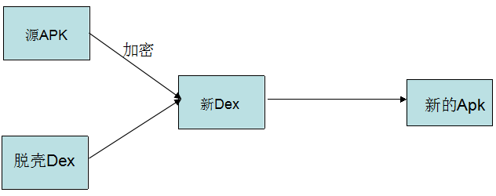
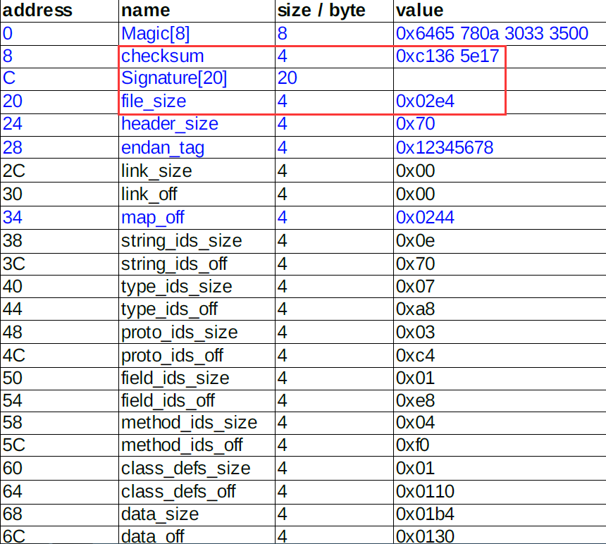
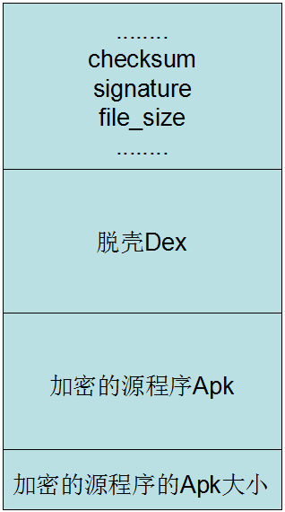

Android加壳那些事
一、前言
现在网上有很多Apk加固的第三方平台，最有名的应当属于：爱加密和梆梆加固了。其实加固有些人认为很高深的技术，其实不然，说的简单点就是对源Apk进行加密，然后在套上一层壳即可，当然这里还有一些细节需要处理，这就是本文需要介绍的内容了。
二、原理解析
下面就来看一下Android中加壳的原理：

我们在加固的过程中需要三个对象：
1、需要加密的Apk(源Apk)
2、壳程序Apk(负责解密Apk工作)
3、加密工具(将源Apk进行加密和壳Dex合并成新的Dex)
主要步骤：
我们拿到需要加密的Apk和自己的壳程序Apk，然后用加密算法对源Apk进行加密在将壳Apk进行合并得到新的Dex文件，最后替换壳程序中的dex文件即可，得到新的Apk,那么这个新的Apk我们也叫作脱壳程序Apk.他已经不是一个完整意义上的Apk程序了，他的主要工作是：负责解密源Apk.然后加载Apk,让其正常运行起来。
在这个过程中我们可能需要了解的一个知识是：如何将源Apk和壳Apk进行合并成新的Dex
这里就需要了解Dex文件的格式了。下面就来简单介绍一下Dex文件的格式
具体Dex文件格式的详细介绍可以查看这个文件：Dex 文件格式介绍
主要来看一下Dex文件的头部信息，其实Dex文件和Class文件的格式分析原理都是一样的，他们都是有固定的格式，我们知道现在反编译的一些工具:
1、jd-gui：可以查看jar中的类，其实他就是解析class文件，只要了解class文件的格式就可以
2、dex2jar：将dex文件转化成jar，原理也是一样的，只要知道Dex文件的格式，能够解析出dex文件中的类信息就可以了
当然我们在分析这个文件的时候，最重要的还是头部信息，应该他是一个文件的开始部分，也是索引部分，内部信息很重要。

我们今天只要关注上面红色标记的三个部分：
1) checksum
文件校验码 ，使用alder32 算法校验文件除去 maigc ，checksum 外余下的所有文件区域 ，用于检查文件错误 。
2) signature
使用 SHA-1 算法 hash 除去 magic ,checksum 和 signature 外余下的所有文件区域 ，用于唯一识别本文件 。
3) file_size
Dex 文件的大小 。
为什么说我们只需要关注这三个字段呢？
因为我们需要将一个文件(加密之后的源Apk)写入到Dex中，那么我们肯定需要修改文件校验码(checksum).因为他是检查文件是否有错误。那么signature也是一样，也是唯一识别文件的算法。还有就是需要修改dex文件的大小。
不过这里还需要一个操作，就是标注一下我们加密的Apk的大小，因为我们在脱壳的时候，需要知道Apk的大小，才能正确的得到Apk。那么这个值放到哪呢？这个值直接放到文件的末尾就可以了。
所以总结一下我们需要做：修改Dex的三个文件头，将源Apk的大小追加到壳dex的末尾就可以了。
我们修改之后得到新的Dex文件样式如下：

那么我们知道原理了，下面就是代码实现了。所以这里有三个工程：
1、源程序项目(需要加密的Apk)
2、脱壳项目(解密源Apk和加载Apk)
3、对源Apk进行加密和脱壳项目的Dex的合并